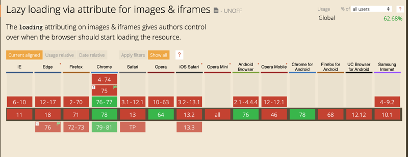
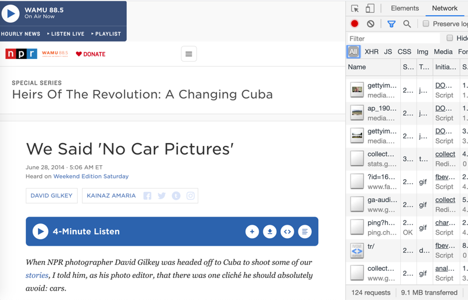
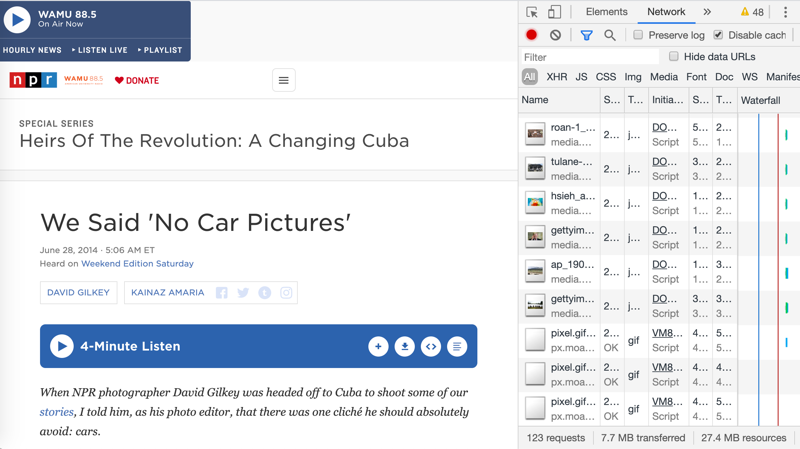

Native Lazy Loading
Available behind a flag in Chrome 75, the loading attribute
went live in Chrome 76.
Browser support?

Ignored by unsupported browsers
The
loading attribute can be used with
img and iframe tags.
"loading=lazy" tells the browser to defer downloading
offscreen content until a user scrolls near the element.

Other loading options...
loading=eager (load immediately)
loading=auto (browser determines when to load)
Demo time
Should we be using this on npr.org?
a few comparisions
Image test - An NPR multimedia page

9.1 MB downloaded on page load
Same page with lazy attribute

7.7 MB downloaded on page load
Iframe test
Favorite live session of 2019 - lots of iframes652 network requests and 25.8 MB downloaded whether or not the page is scrolled.
Same page with iframe loading deffered
347 network requests and 17.1 MB downloaded
iframes are loaded as they are scolled to
Should we implement?
*probably - after ensuring the user expereince isn't diminished.
*testing was done on a devbox.
**Devboxes are not to be trusted.